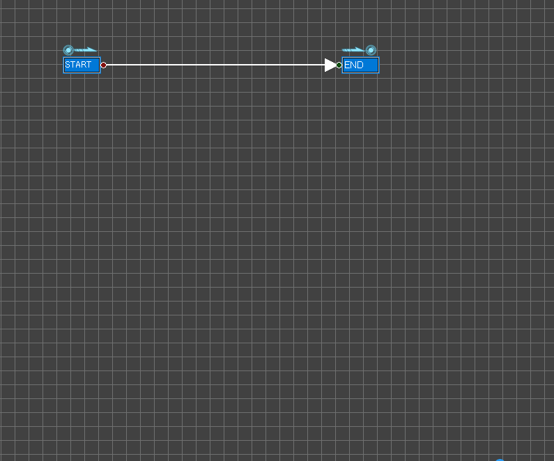
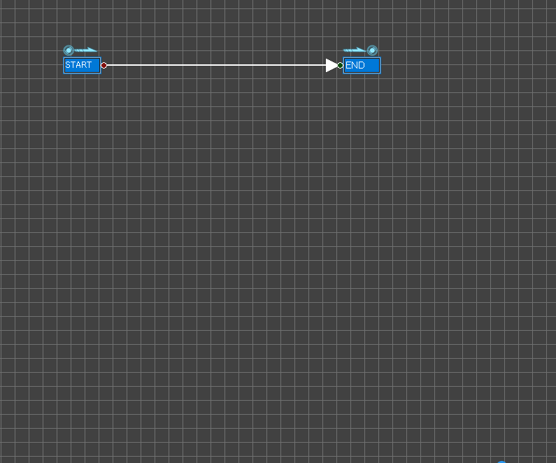
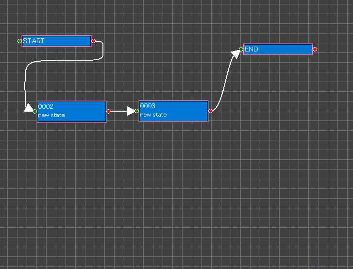
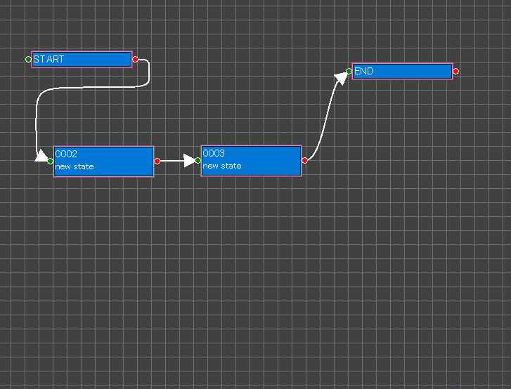

Creating a new state
１．Clicking blank space causes displaying Blank menu then select "Create New State" to creating a new state.
２．Drag the red circle of the node and draw an arrow to connect the states.

２．Drag the red circle of the node and draw an arrow to connect the states.

Writing program code and data
１．Clicking the state causes displaying State Menu then select "Edit item".
➡Item Edit Dialog will be displayed.
２．Click "state" then input a state name and a comment.
３．Click "init" then write code after entering the state.
※ Edit items as its need.

※NOTE:
The items are converted to the output using the template.
Your first step is understanding the relationship between the items and the template.
Afterthat, your peformance can be accelerated using customizing the items and the template.
➡Item Edit Dialog will be displayed.
２．Click "state" then input a state name and a comment.
３．Click "init" then write code after entering the state.
※ Edit items as its need.
※NOTE:
The items are converted to the output using the template.
Your first step is understanding the relationship between the items and the template.
Afterthat, your peformance can be accelerated using customizing the items and the template.
Creating program branch
1. Clicking on the state causes opening STATE MENU.
2. Selecting "Edit Branch" causes opening BRANCH EDIT DIALOG.
3. Clicking on blank causes opening a context menu then click "IF".
4. Input conditions.
5. Close the dialog.
6. Connect branches to next states.

※ Confirm output on Source Panel.

Edit Branch Dialog
2. Selecting "Edit Branch" causes opening BRANCH EDIT DIALOG.
3. Clicking on blank causes opening a context menu then click "IF".
4. Input conditions.
5. Close the dialog.
6. Connect branches to next states.
※ Confirm output on Source Panel.
Moving a state
１．Pushing down and holding a mouse button on the state causes floating it to move.
２．Move the state then release the button.

２．Move the state then release the button.
Moving selected states
１．Pushing down and holding a mouse button while moving a mouse on blank space causes displaying a red rectangle to select nodes.
２．Select states.
３．Pushing down and holding a mouse button on a selected state causes floating them to move.
４．Moving them and release the button.

２．Select states.
３．Pushing down and holding a mouse button on a selected state causes floating them to move.
４．Moving them and release the button.
Grouping states
１．Pushing down and holding a mouse button while moving a mouse on blank space causes displaying a red rectangle to select nodes.
２．Select states.
３．Clicking a selected state causes displaying Selected States Menu then select "Make Group".
➡ Making group dialog will be displayed.
４．Input group name and comment.

２．Select states.
３．Clicking a selected state causes displaying Selected States Menu then select "Make Group".
➡ Making group dialog will be displayed.
４．Input group name and comment.

Copy and paste
１．Select "Copy" on Selected States Menu.
２．Select "Paste" on Blank Menu.

※ Pasting to another State Edit Panel on the other StateGo is ok.

２．Select "Paste" on Blank Menu.
※ Pasting to another State Edit Panel on the other StateGo is ok.
Sliding
① Clicking on blank space causes displaying "Θ".
② Moving the mouse causes sliding the edit image.
③ Releasing the mouse button causes stopping its slide.

② Moving the mouse causes sliding the edit image.
③ Releasing the mouse button causes stopping its slide.
Node Names

① State
② State out of group
States do not belong to the displaying group.
They are displayed because sources and distinations of the states on the current group.
③ Group
It has states in the node.
To enter, Clinking the group causes displaying "Group Menu" then select "Enter group".
④ Embed node
The program code in this node will output as-is to the file.
⑤ Comment node.
Just displaying comment for this document.
Use External Editor for item's text
{kind=link}